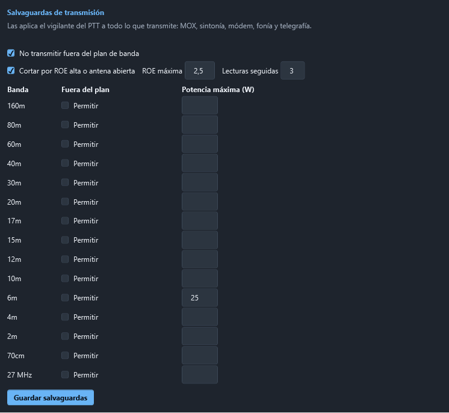

Salvaguardas de transmisión
Todo lo que pone el equipo en antena —el MOX y el TUNE del frontal, el módem digital, la fonía y la telegrafía— pasa por el vigilante del PTT, que es el único camino para salir al aire. Además del tope de tiempo, el latido y el botón de pánico de siempre, el vigilante aplica estas salvaguardas:


Fuera del plan de banda no se transmite
Antes de subir el PTT se mira el canal entero que va a ocupar la emisión, no solo la portadora, contra el plan de banda de la región 1 de la IARU que usa el programa:
| Modo | Canal que se mira |
|---|---|
| CW | la portadora más o menos medio ancho del filtro (500 Hz si el equipo no lo dice) |
| USB y modos de datos | de la portadora hacia arriba, el ancho del filtro (3 kHz como mínimo) |
| LSB | de la portadora hacia abajo |
| AM y FM | a los dos lados (6 y 16 kHz) |
Si un borde se sale del plan, no se transmite y se dice por qué, con las frecuencias: por ejemplo, en LSB a 7,002 MHz el canal baja hasta 6,999 MHz. Con split, se mira el VFO que transmite.
Licencias especiales. En la tabla, Permitir deja transmitir fuera del plan en una banda concreta. Pide una confirmación explícita («Sí, mi licencia lo permite») y queda anotado en el registro. También se puede quitar del todo con No transmitir fuera del plan de banda, pero no es lo recomendable.
ROE alta o antena abierta: corte
Mientras se transmite, el vigilante lee la ROE del equipo cuatro veces por segundo:
- FT-710: el medidor
RM6y la alarma Hi-SWR del propio equipo (RI0, segundo dato). - ICOM: el medidor
15 12.
Solo cuenta cuando hay potencia (en CW con la llave arriba la ROE no dice nada). Si pasa de la ROE máxima (2,5 de fábrica) en varias lecturas seguidas (3), corta. Si llega a 3,0 o el equipo da su alarma de ROE, corta en la primera lectura: antena abierta o en corto.
En el FT-710, el manual CAT da el medidor de ROE en bruto (0 a 255) sin su curva; el programa usa la de la familia FTDX10/FTDX101 y, por encima, la alarma del propio equipo. Conviene comprobar la escala una vez con una carga artificial.
Tras un corte, no se rearma solo
Si el vigilante corta por ROE, por el tiempo máximo o porque quien transmitía dejó de responder, no deja volver a transmitir hasta que se suelten todas las fuentes de PTT:
- el MOX del frontal;
- el Tx habilitado del módem digital;
- el PTT de la fonía;
- la telegrafía (lo que esté saliendo y el automático).
Así una secuencia automática o una tecla que se quedó pulsada no vuelven a poner el equipo en el aire una y otra vez. El motivo sale en rojo en este apartado y en la zona de telegrafía.
Solo quien subió el PTT lo baja
En el uso normal, solo la fuente que tiene la antena la suelta al terminar: otra fuente no puede ni subir el PTT encima ni bajarlo por ella. Las bajadas de emergencia —PARAR CW, Esc, el botón de pánico, el tope, el cierre del programa— pueden siempre.
Potencia máxima por banda
En la tabla, Potencia máxima (W) por banda. Antes de transmitir en esa banda se baja la potencia del equipo a ese valor (PC en Yaesu, el nivel de potencia en ICOM). Si el equipo no deja poner o comprobar la potencia, no se transmite. Vacío: sin límite.
Pulse Guardar salvaguardas: se aplican en el acto y quedan en seguridad-tx.json, en la carpeta de datos.